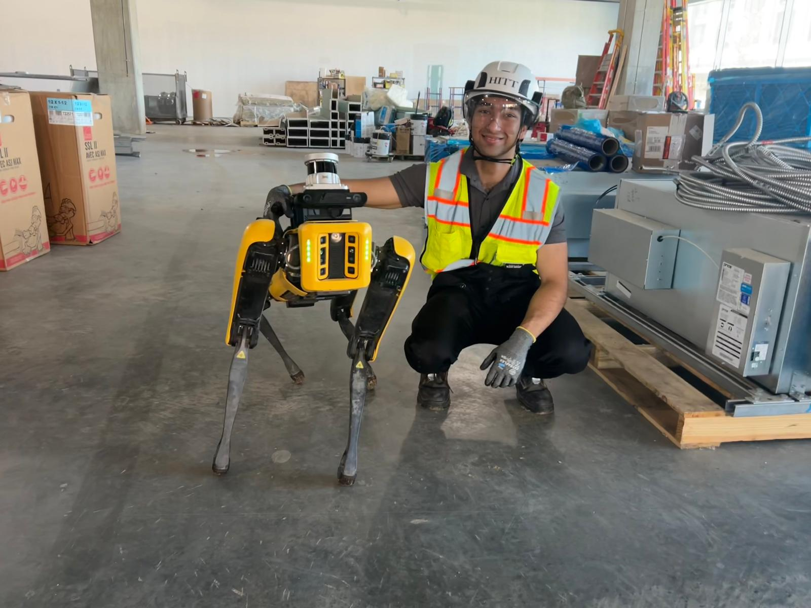

R&D Intern, Summer 2026
HITT Contracting
I developed and deployed a human-aware social navigation layer for Boston Dynamics Spot, integrating real-time human tracking with motion planning to dynamically adjust trajectories around moving pedestrians.

Project Overview
Construction sites are hard for autonomous robots. People move unpredictably, layouts change constantly, and standard obstacle avoidance often reacts too late. During my internship at HITT Contracting, I built a social navigation layer for Boston Dynamics Spot that combined human perception, tracking, and motion planning to make the robot respond more naturally around people. Running entirely on edge compute via a Jetson Orin AGX, I developed a containerized ROS 2 pipeline that utilized a ZED 2i camera and an Ouster LiDAR. By feeding real-time skeleton tracking into a custom Nav2 MPPI critic, the robot could proactively adjust its trajectory and yield to pedestrians in dynamic environments.
Human Perception
The first step was getting reliable human detections from the ZED 2i. The camera tracked bodies and produced skeletons and bounding boxes, which let the system estimate where people were and how their posture changed the robot's behavior.
Once the detections were flowing in, the next step was turning them into something more useful than a raw point in space. I used the tracked skeleton keypoints to classify posture and estimate more than just position. That let the system distinguish between someone who was standing still, walking, sitting, or lying down, which matters a lot when you are trying to decide how aggressively the robot should give space.
By detecting nearby people's posture, the robot could give different amounts of space based on what they were doing. You want to give more space to somebody who is walking and carrying something heavy than somebody who is sitting and working on a tablet.
Building a custom MPPI critic
To translate perception into action, I wrote a custom Nav2 MPPI critic. Instead of treating people as static obstacles in a standard costmap, the system scores candidate trajectories based on predicted human motion. For walking people, that meant using motion information to predict future positions; for more static cases, it meant building cost fields around the person's current location so the robot would avoid moving straight toward them.
Simulation and testing
Before taking the system to a real jobsite, I tested it in simulation so I could get a sense of whether the planner was reacting in a stable, understandable way. The simulation environment helped isolate the social planner from hardware noise and gave a cleaner view of how the behavior changed with different people and trajectories.
However, deploying on Spot exposed timing, perception, and navigation issues that were hidden in simulation. The ZED skeleton data was initially interpreted in the wrong reference frame after switching between camera and world coordinates, causing tracked people and their velocities to appear rotated relative to the robot. I debugged the TF chain and verified the transforms between the ZED, robot, and navigation frames. I also encountered LiDAR scan smearing because the Ouster was running too slowly for Spot's motion; increasing the scan rate from 10 Hz to 20 Hz and correcting sensor time synchronization improved the alignment. On the navigation side, I tuned Nav2's MPPI parameters for Spot's physical constraints, including reducing the configured robot footprint to allow navigation through tighter spaces. I also created a LiDAR mask to filter persistent ghost returns that were otherwise being incorporated into the navigation and mapping pipeline.
Results
A side-by-side comparison highlights the difference. Without the critic, Spot only notices the person once its obstacle avoidance kicks in and has to replan its path and blocks the route. With the custom social critic, Spot immediately adjusts its heading to signal its intent to yield and gives a comfortable distance to the walking person and finally returns to the original path.
Challenges and next steps
The deployment exposed two limits: the sensor stack has blind spots, and manual tuning does not scale across edge cases. I would next add clearer robot-to-person intent signaling and more nuanced pedestrian models for tight spaces. Working on the physical robot highlighted that the sensor stack has inherent blind spots and that manual parameter tuning for every edge-case scenario is not scalable.
The next step is better two-way communication so the robot can signal its intent as clearly as it infers other people's. I'd also want more nuanced pedestrian modeling, especially in tight spaces, so the clearance strategy can respond more naturally.